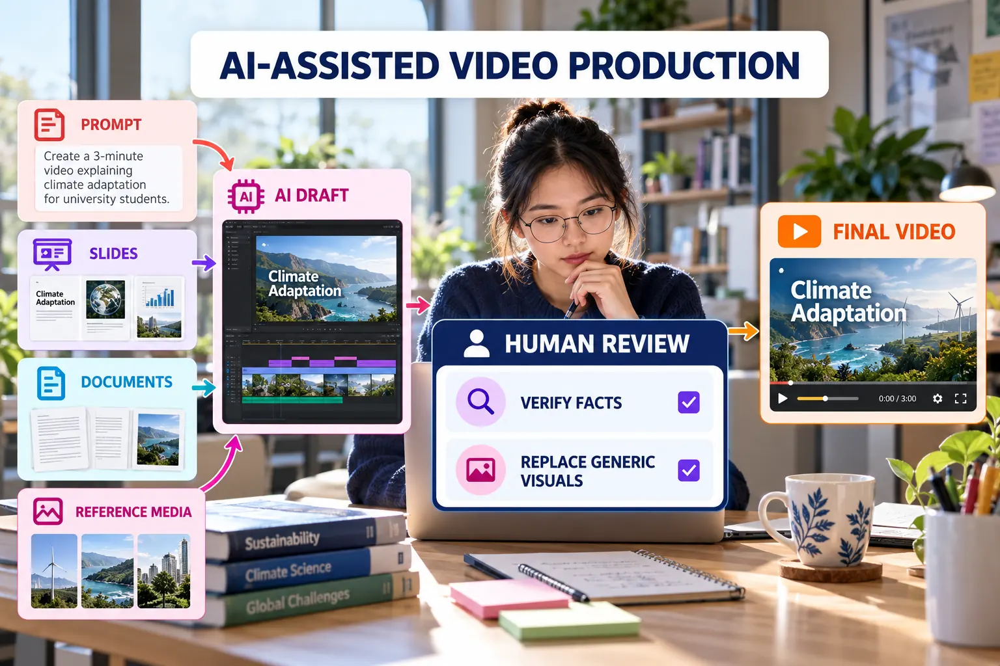

AI-Assisted Video Production
Use Gemini-supported production features as a draft accelerator while retaining human judgement, evidence and accountability.

Appropriate uses of AI
- Generate an initial outline or scene sequence.
- Draft narration for later factual review.
- Suggest supporting visuals or short clips.
- Create a voice-over where the feature is available.
- Convert slides or documents into a first scene structure.
- Identify areas where the explanation needs clearer transitions.
Human review gate
| Check | Question | Required action |
|---|---|---|
| Accuracy | Does every claim match the project? | Correct or remove unsupported claims. |
| Evidence | Are actual screens and results shown? | Replace generic visuals with project evidence. |
| Ownership | Does the video reflect the student's work? | Explain personal decisions and contributions. |
| Privacy | Was sensitive material uploaded? | Remove private data and revoke unsafe sharing. |
| Disclosure | Was substantial AI assistance used? | Acknowledge it in the README or submission. |
Reusable Google Vids prompt
Create a 90-second educational video for first-year university students. Topic: A digital project workflow using GitHub, Figma and Google Stitch. Purpose: Explain planning, design, development and publishing. Structure: Problem, process, demonstration, reflection and closing. Visual direction: Clean academic style, concise text and accessible colours. Evidence rule: Do not invent features, results, users or project evidence.
Academic integrity: AI-generated narration, avatars or visuals must not misrepresent authorship, user testing, project completion or personal participation.